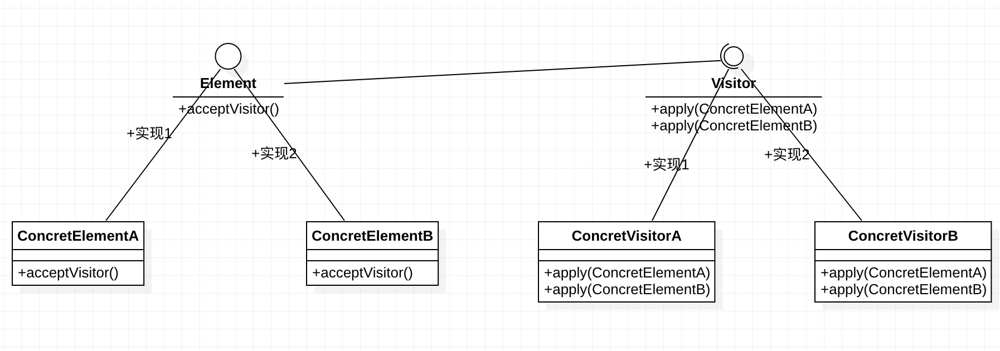

类别：行为型设计模式
目的：不改变类的定义的约束下，为类的对象应用/添加新的行为
典型场景
现存一系列对象，比如由很多html标签对象组成了一个html页面，这里拿几个html标签举例
| 标签 | 当前状态 | 目标状态 |
|---|---|---|
| a | <a href=“#”>link</a> |
添加class=“underlinea" |
| p | <p>this is a paragraph</p> |
添加style=“font: bold" |
| h1 | <h1>new title</h1> |
添加id=“h1-highlight" |
当前代码状态如下，注意需要修改的部分
// a标签
public class AnchorNode implements HtmlNode {
public String cssClass = ""; // 注意此处需要修改
public String text = "link";
public String getContent()
{
return String.format("<a class='%s'>%s</a>", cssClass, cssClass, text);
}
}
// p标签
public class ParagraphNode implements HtmlNode {
public String style = ""; // 注意此处需要修改
public String text = "this is a paragraph";
public String getContent()
{
return String.format("<p style=''></p>", style, text);
}
}
// h1标签
public class HeadingNode implements HtmlNode {
public String id = ""; // 注意此处需要修改
public String text = "this is a paragraph";
public String getContent()
{
return String.format("<h1 id='%s'>%s</a>", id, text);
}
}
硬编码
要达到目标状态、需要修改的内容如下
- AnchorNode的cssNode属性需要赋值为underlinea
- ParagraphNode的style属性需要赋值为font: bold
- HeadingNode的id属性需要赋值为h1-highlight
要实现以上功能，很容易想到直接修改类定义，参考如下
// a标签
public class AnchorNode implements HtmlNode {
public String cssClass = "underlinea"; // 按照需求进行修改
public String text = "link";
public String getContent()
{
return String.format("<a class='%s'>%s</a>", cssClass, cssClass, text);
}
}
// p标签
public class ParagraphNode implements HtmlNode {
public String style = "font: bold"; // 按照需求进行修改
public String text = "this is a paragraph";
public String getContent()
{
return String.format("<p style=''></p>", style, text);
}
}
// h1标签
public class HeadingNode implements HtmlNode {
public String id = "h1-highlight"; // 按照需求进行修改
public String text = "this is a paragraph";
public String getContent()
{
return String.format("<h1 id='%s'>%s</a>", id, text);
}
}
虽然修改成功达到了目的，但在需要修改的class数量比较多时(比如30个类)， 会导致修改大量的文件，同时因为修改的代码都分散很多不同的文件中，非常不利于新增的修改代码的维护，这时就可以使用访问者设计模式了
模式实现
在所有同类的潜在会被修改的class内设计一个接收访问者的方法，交由访问者对自身进行修改
代码
访问者接口定义如下
public interface Visitor {
void apply(HeadingNode heading);
void apply(AnchorNode anchor);
void apply(ParagraphNode paragraph);
}
定义一个进行目标修改的访问者
public class AddCssVisitor implements Visitor {
@Override
public void apply(HeadingNode heading) {
heading.id = "h1-highlight";
}
@Override
public void apply(AnchorNode anchor) {
anchor.cssClass="underlinea";
}
@Override
public void apply(ParagraphNode paragraph) {
paragraph.style = "font: bold";
}
}
在需要应用这些修改的对象对应的class内部，设计一个接收并应用访问者的方法，参考如下
接口
public interface HtmlNode {
void acceptVisitor(Visitor visitor);
}
具体实现，拿AnchorNode举例
public class AnchorNode implements HtmlNode {
public String cssClass = "underlinea";
public String text = "link";
public String getContent()
{
return String.format("<a class='%s'>%s</a>", cssClass, cssClass, text);
}
@Override
public void acceptVisitor(Visitor visitor) {
visitor.apply(this);
}
}
这样通过调用AnchorNode的acceptVisitor方法就可以在不修改AnchorNode类定义的限定下，通过vistor对AnchorNode对象进行目标修改
同时可以定义多个Vistor，各调用一次目标对象的acceptVisitor方法可以实现多个/多种修改目的
UML

为什么访问者模式更好
存在大量同类对象需求修改时，可以将修改内容集中到一处（一个访问者内），降低直接修改大量目标类产生的漏改/错改，或者使得修改后的类行为不再符合某些依赖方预期。降低改动大量类文件的风险，同时将修改集中到一处，方便后期进行维护，同时对于新的迭代，也可以使用一个新的访问者实现，将迭代的风险集中管理
一些注意的点
可以将接纳访问者的acceptVisitor方法写到父类中